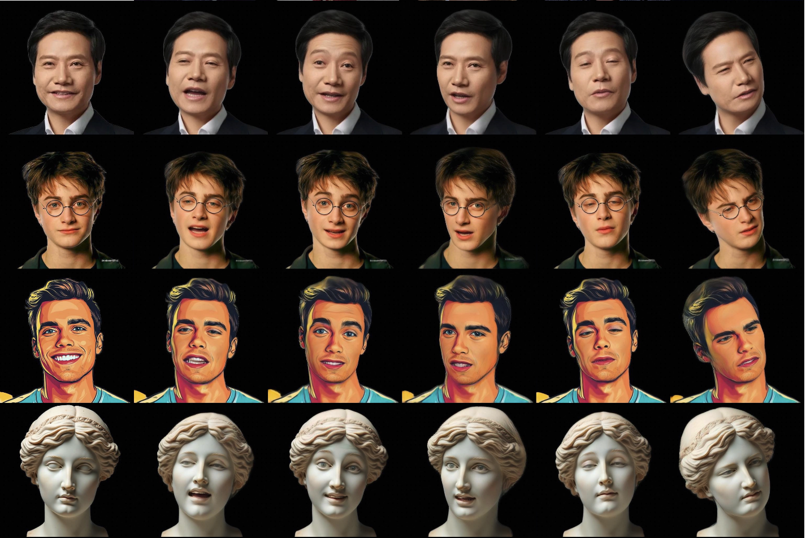
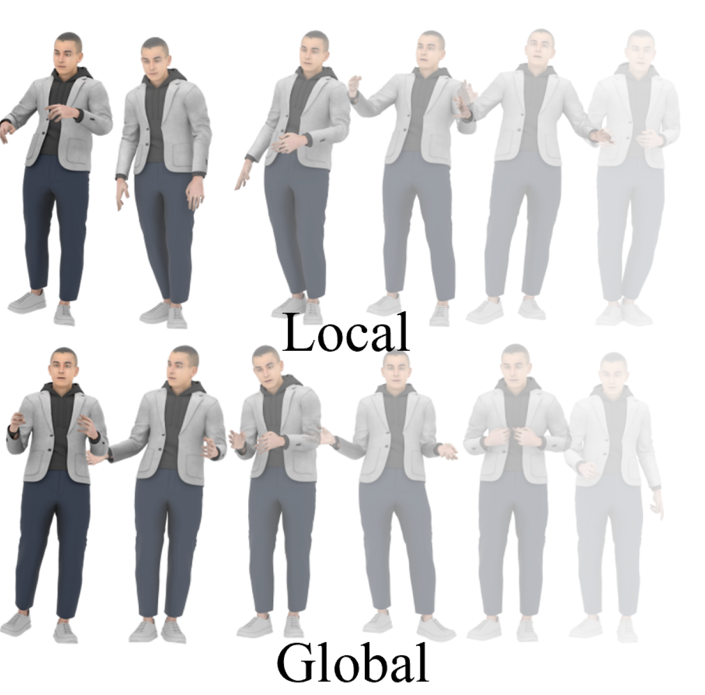
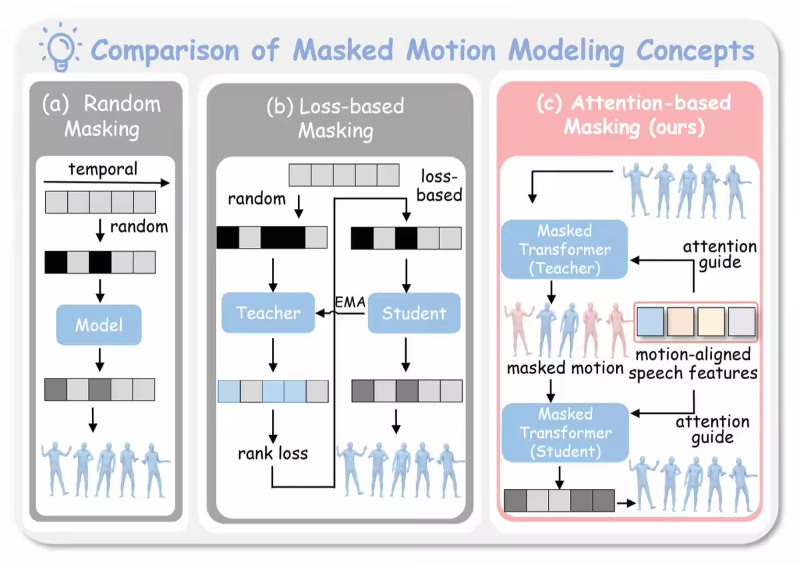
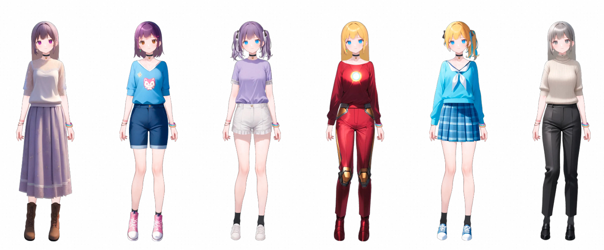
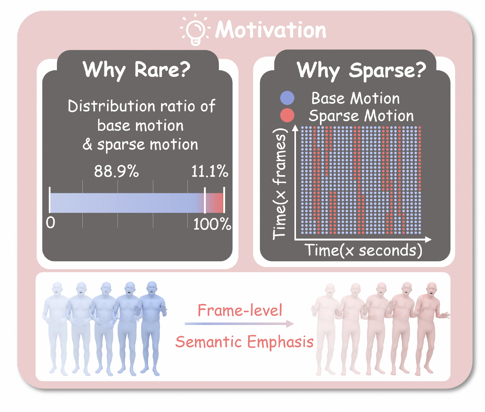
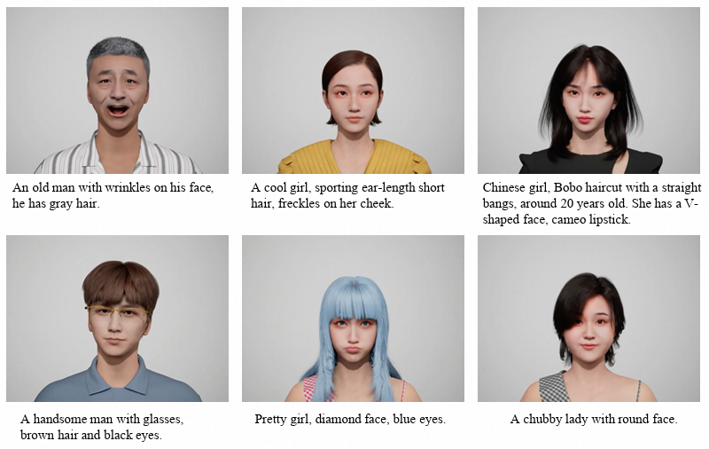
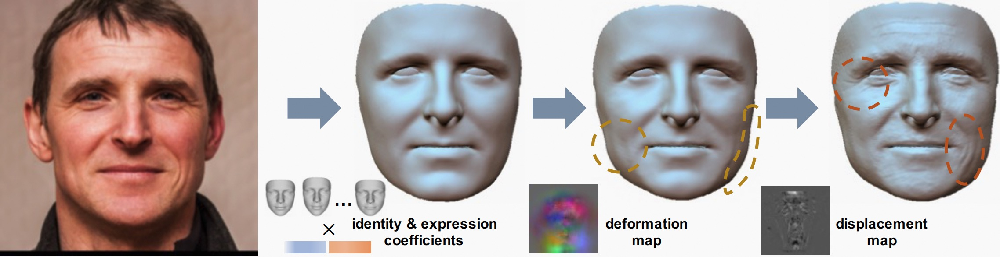
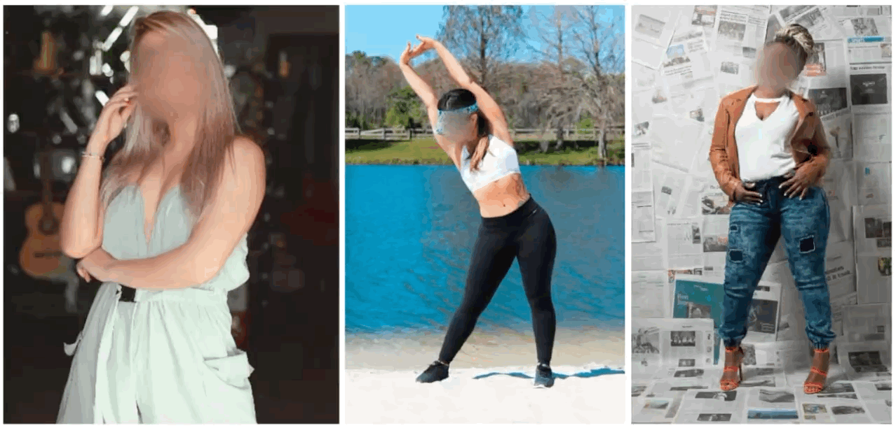
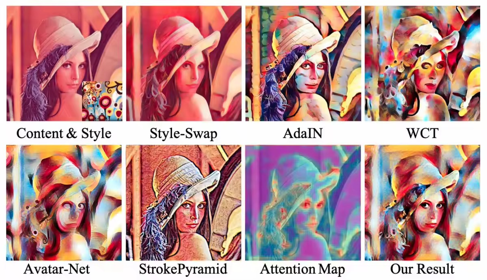

|
Jianqiang Ren (任健强)
I am currently a Senior Algorithm Expert at Alibaba Tongyi Lab. I have been actively involved in projects including Luban Intelligent Design, the Tongyi (Qwen) App, Taobao Avatar 2 and Wanxiang Digital Human. I earned my bachelor’s and master’s degrees from Zhejiang University. My research mainly focuses on human-centric AIGC, multimodal 3D digital avatar generation, animation and humanoid robot control.
Email /
Scholar /
Github
|
|
Research
I'm interested in computer vision, human-centric generative AI, multimodal digital avatar, and embodied intelligence.
|
|

|
OMG-Avatar: One-shot Multi-LOD Gaussian Head Avatar
Jianqiang Ren, Lin Liu, Steven Hoi
CVPR, 2026
arXiv / project
One-shot Multi-LOD Gaussian head reconstruction from a single image in 0.2s, supporting diverse hardware capabilities and inference speed requirements.
|
|

|
Mitigating Error Accumulation in Co-Speech Motion Generation via Global Rotation Diffusion and Multi-Level Constraints
Xiangyue Zhang, Jianfang Li, Jianqiang Ren, Jiaxu Zhang
AAAI, 2026
arXiv
A diffusion-based framework operating in global joint rotation space to alleviate hierarchical error accumulation, improving performance by 46% compared to SOTA.
|
|

|
EchoMask: Speech-Queried Attention-based Mask Modeling for Holistic Co-Speech Motion Generation
Xiangyue Zhang, Jianfang Li, Jiaxu Zhang, Jianqiang Ren, Liefeng Bo, Zhigang Tu
ACM MM, 2025
arXiv / project
A speech-queried attention-based mask modeling framework that selectively masks rhythm-related and semantically expressive motion frames for co-speech motion generation.
|
|

|
Textoon: Generating Vivid 2D Cartoon Characters from Text Descriptions
Chao He, Jianqiang Ren, Yuan Dong, Jianjing Xiang, Xiejie Shen, Weihao Yuan, Liefeng Bo
arXiv preprint arXiv:2501.10020
arXiv / project / code
Generating diverse 2D cartoon characters in Live2D format from text descriptions within one minute.
|
|

|
SemTalk: Holistic Co-Speech Motion Generation with Frame-level Semantic Emphasis
Xiangyue Zhang, Jianfang Li, Jiaxu Zhang, Ziqiang Dang, Jianqiang Ren, Liefeng Bo, Zhigang Tu
ICCV, 2025
arXiv / project / code
Holistic co-speech motion generation with frame-level semantic emphasis, separately learning base motions and sparse motions with adaptive fusion.
|
|

|
Make-a-Character: High Quality Text-to-3D Character Generation within Minutes
Jianqiang Ren, Chao He, Lin Liu, Jiahao Chen, Yutong Wang, Yafei Song, Jianfang Li, Tangli Xue, Siqi Hu, Tao Chen, Kunkun Zheng, Jianjing Xiang, Liefeng Bo
arXiv preprint arXiv:2312.15430
arXiv / project / code
Creating lifelike 3D avatars from text descriptions within 2 minutes, enabling easy integration with CG pipelines for dynamic expressiveness.
|
|

|
A Hierarchical Representation Network for Accurate and Detailed Face Reconstruction from In-the-Wild Images
Biwen Lei, Jianqiang Ren, Mengyang Feng, Miaomiao Cui, Xuansong Xie
CVPR, 2023
arXiv / project / code
Hierarchical representation network for accurate and detailed face reconstruction with geometry disentanglement and 3D priors of facial details.
|
|

|
Structure-Aware Flow Generation for Human Body Reshaping
Jianqiang Ren, Yuan Yao, Biwen Lei, Miaomiao Cui, Xuansong Xie
CVPR, 2022
arXiv / code
End-to-end flow generation for body reshaping under guidance of structural priors, achieving controllable performance under arbitrary poses and garments.
|
|

|
Attention-Aware Multi-Stroke Style Transfer
Yuan Yao, Jianqiang Ren, Xuansong Xie, Weidong Liu, Yong-Jin Liu, Jun Wang
CVPR, 2019
arXiv / code
Integrating self-attention mechanism into style transfer to coordinate spatial attention and render diverse brush strokes harmoniously.
|
|